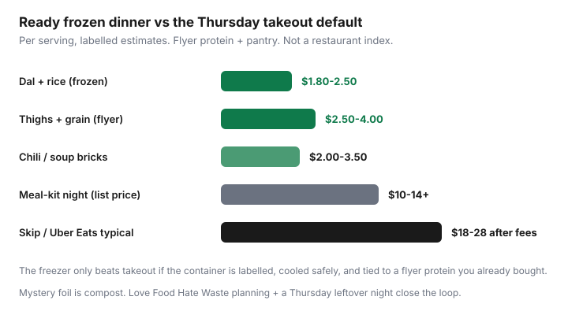

Food & Groceries · Canada
Batch cooking for Canadian weeknights: freeze meals that beat takeout prices
Takeout wins on Thursday because there is no labelled backup from Sunday’s flyer chicken. Meal-prep culture sells matching glass rectangles. Canadian households need something ruder: cook the loss-leader protein, cool it safely, freeze flat, eat it when SkipTheDishes looks tempting. That is how a $3 serving beats an $22 fee-laden delivery — if the container is not a science experiment.
This guide connects batch days to Canadian flyer and Flashfood timing, with food-safe cooling, labels, a cost-per-serving worksheet, and a ban on mystery foil. Broader $50–$75 meal-prep weeks live in the meal-prep guide. This page is the freezer operations manual.
Disclosure: Freezer containers are an offer type. Meal-kit trials are an optional contrast, not the weekly plan. Saving Optimizer may earn a commission if we later add container, kit, or portal links. We do not currently claim those partnerships. Painter’s tape and the containers you already own are enough. This is not food-safety certification — when in doubt, throw it out.
Key takeaways
- Freeze components that reheat (chili, dal, shredded chicken, cooked beans, tomato sauces). Skip crispy-salad ambition.
- Cool quickly; fridge within two hours; freeze in shallow portions. Health Canada / CFIA-style leftovers clocks are quality and safety, not vibes.
- Label name + date + ‘eat by’ on every brick. A door list beats a pretty app.
- Cost the serving: ingredients ÷ portions. If it is not clearly under takeout, you built a hobby.
- Batch on the day you buy flyer or Flashfood protein. Unplanned surplus meat is how 50% off becomes 100% loss.
Choose recipes that reheat well
Winners: chili, dal, stews, pulled chicken, meatballs in sauce, cooked beans, taco filling, tomato sauce, soup. Losers: battered anything, most stir-fried vegetables you wanted crisp, dressed salad, fried rice you already refrigerated for four days then froze as an afterthought.
Texture insurance: freeze the protein and grain separately from veg you will add fresh or from frozen at reheat. Canadian winter produce is allowed to be frozen mixed vegetables. That is not a moral failure — it is how you stop ordering pizza because the broccoli died.

Cooling and food-safe freezing steps
- Shop once from the flyer list. Come home. Do not “quickly grab” sushi while the chicken sits in the car.
- Cook the protein and a grain pot the same night (or next morning if you shopped late).
- Cool in shallow containers. Fridge within two hours. Do not leave a stockpot of chili on the counter overnight because February is cold. The middle of the pot is still a risk.
- Portion: 2–3 days in the fridge, the rest frozen flat. Freeze-same-day Flashfood meat — Flashfood rules.
- Reheat until steaming hot. Soups and leftovers are not a second-guessing contest if they smell off — bin them.
Love Food Hate Waste Canada’s planning pages pair with this: cook what you will eat, freeze what you will not eat this week, and do not buy a second protein until the bricks move.
Not medical or inspection advice. CFIA best-before dates are quality on unopened food. Cooked leftovers are a shorter clock. When slime, off smell, or “how long has this been here?” shows up, throw it out. The $3 serving is not worth a bad night.
Labeling and inventory rotation
Painter’s tape: dish name, YYYY-MM-DD cooked, eat-by window you actually respect (for example fridge 3 days, freezer 2–3 months for quality). FIFO: new bricks behind old. A paper list on the freezer door, updated when something goes in or out. Mystery meat is compost in slow motion — same sermon as food waste systems.
Containers: stackable, leak-proof, lids that still exist. A 24-piece matching set that does not fit your freezer is household-items spend. You do not need a brand. You need a lid.
Cost per serving worksheet
Notes app:
- Protein $ + onions $ + canned tomatoes $ + grain $ + spices you already owned (count $0 unless you bought them this shop).
- Divide by portions you will actually eat, not portions you imagined.
- Compare to the takeout you would have ordered on Thursday (include fees and tip).
Worked example (labelled): $12 sale thighs + $2 onion/garlic + $1.50 tomatoes + $1 rice = $16.50 for six servings ≈ $2.75. A two-person Skip order at $40 is not close. If your “batch” is a $24 meal kit boxed as four servings, you bought labour. Fine as a contrast trial; not the system.
Linking batch days to flyer protein buys
Thursday: Flipp finds the protein. Sunday (or the shop day): cook it. That is sales → meals → list with a freezer attached. Flashfood intercepts are allowed if pickup is on the route and the meat hits the freezer that night. Do not buy a family pack “for batching” on a random Wednesday with no calendar slot — that is how Costco couples fail, and how this fails too.
Vegetarian version: dal and chili freeze better than most people’s tofu stir-fry. See the vegetarian budget week.
Avoiding freezer mystery containers
- If it does not have a date, it is soup this week or it is gone. No archaeological digs in July.
- Transparent containers beat foil bricks you will not identify.
- One in, one out: do not freeze a sixth chili until two have been eaten.
- Thursday leftover night eats fridge food first; freezer bricks are the takeout understudy.
The freezer beats takeout only when it is a labelled inventory, tied to a flyer protein you already paid for. Everything else is a hobby that still orders pizza.
Sources & date stamps
- Love Food Hate Waste Canada, plan-it-out / meal planning pages (cook what you will eat, freeze extras).
- CFIA / Health Canada consumer date-label and leftover-style guidance as used in our food-waste article (best-before ≠ expiry; when in doubt on leftovers, discard).
- WealthNorth / Canadian grocery-savings explainers on cooking from flyers (directional).
- Loblaw–Flashfood 2 Mar 2026 release (surplus meat as planned diversion, not a second waste stream).
Frequently asked questions
What meals freeze well for Canadian weeknights?
Chili, dal, stews, shredded or cubed cooked chicken, meatballs in sauce, bean dishes, and tomato sauces. Freeze grains separately if you hate mush. Skip foods you wanted crispy.
How long can I keep leftovers in the fridge or freezer?
Treat cooked leftovers as a few days in the fridge, not a week of optimism. Freezer quality is often a couple of months for these dishes — label them. This is household practice, not a lab certificate. Off smell or slime: throw it out.
Do I need special containers?
No. Stackable, leak-proof, lids you still have. Painter’s tape for labels. A branded set is optional household spend. Measure your freezer before you buy 24 cubes that will not fit.
How does this beat takeout?
Cost the serving including the flyer protein you already bought. Typical frozen chili or dal lands a few dollars a serving versus high teens or twenties after delivery fees. If you will not eat the brick, takeout still wins — that is a labelling and calendar problem.
Should I use a meal kit instead?
A trial can replace a takeout night you would have paid for anyway. As a weekly protein system, kits usually lose to flyer chicken and a freezer. Compare list prices plus fees, not the marketing per-serving number.